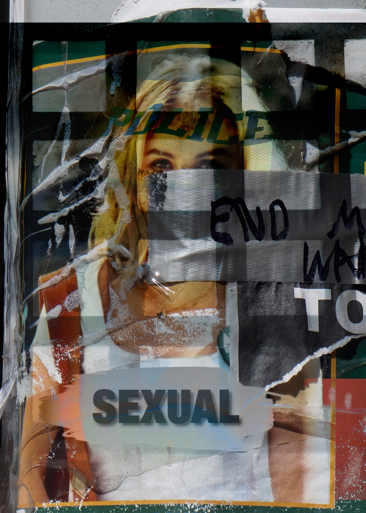

Nataliia Poliak is interested in photography, digital media, and visual storytelling. Her work often focuses on everyday life, emotions, identity, gender, and the ways people experience and move through public and personal spaces. She uses photography and digital tools to explore subjects that feel personal, social, or connected to the world around her. She is especially interested in how images can communicate feelings and ideas that can be difficult to explain directly.
